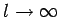
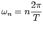
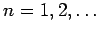
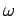
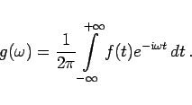
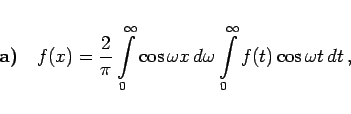
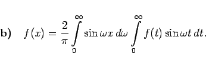
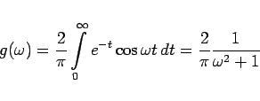
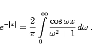

Inhalt Index DeskTop Bronstein

 Unendliche Reihen Fourier-Reihen Fourier-Reihe und Fourier-Integral
Unendliche Reihen Fourier-Reihen Fourier-Reihe und Fourier-Integral


Die Formel (7.106a) kann als Grenzfall der Entwicklung einer nichtperiodischen Funktion f(x) in eine trigonometrische Reihe im Intervall (-l,+l) für  aufgefaßt werden.
Mit Hilfe der FOURIERschen Reihenentwicklung wird eine periodische Funktion mit der Periode T als Summe harmonischer Schwingungen mit den Frequenzen  mit  und den Amplituden An dargestellt. Diese Darstellung beruht somit auf einem diskreten Frequenzspektrum.
Im Unterschied dazu wird mit Hilfe des FOURIER-Integrals die nichtperiodische Funktion f(x) als Summe unendlich vieler harmonischer Schwingungen mit stetig variierender Frequenz  dargestellt. Das FOURIER-Integral liefert somit eine Entwicklung der Funktion f(x) in ein kontinuierliches Frequenzspektrum. Hierbei entspricht der Frequenz die Dichte des Spekrums:
|  | (7.106c) |
Das FOURIER-Integral ist von einfacherer Form, wenn die Funktion f(x) entweder a) eine gerade oder b) eine ungerade Funktion ist:
|  | (7.107a) |
|  | (7.107b) |
| Beispiel |
|
Für die gerade Funktion f(x) = e-|x| ergeben sich die Dichte des Frequenzspektrums und die Darstellung der Funktion zu |
|  | (7.108a) |
und
|  | (7.108b) |